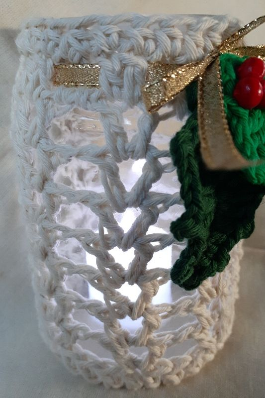
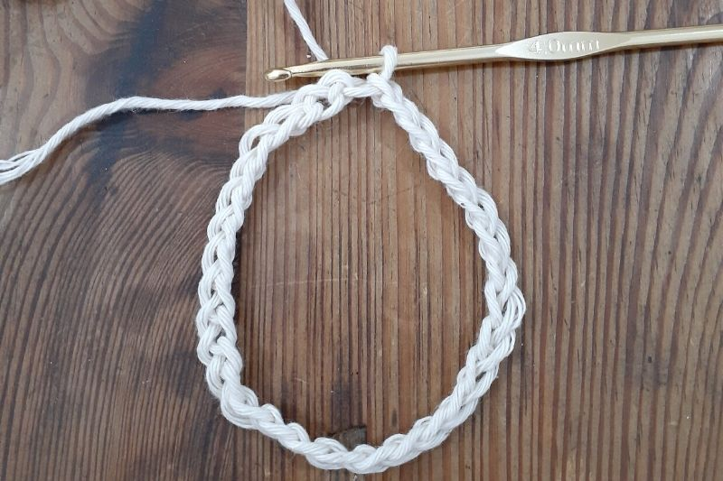
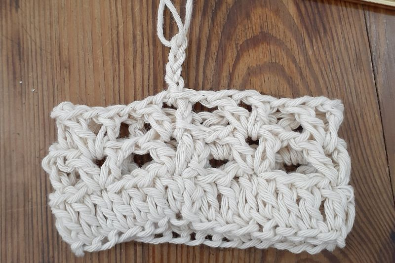

Materiales
Hilo de Algodon.
Aguja n°3 de Crochet
Aguja para coser lana
Tijera
Abreviaturas
c:cadena
p: punto
p.enano: punto deslizado o razo.
Pb: punto bajo.
Pm: punto medio.
V o pa: vareta.
Pdv: punto doble vareta.
Aum: Aumento (2puntos en el mismo punto de base)
Dism: Disminucion (tomar 2puntos y cerrarlos juntos)
1. Tejer tantas cadenas como la base del frasco (en este caso teji 31c)
2. Enderesar las cadenas y unirlas con un p.enano
3. Levantar 2c y tejer en el mismo punto que teji en p.enano, 1v + 1c + 1v + 1c, dejo sin tejer 3p de base y el 4°
vuelvo a repetir la secuencia de 1v + 1c + 1v + 1c y asi repito toda la vuelta. Cerrar con p. enano dentro de la primer v corta.
4. Levanto 4c y tejo en el mismo lugar 1v, y de esta forma ya teji la 1° v corta de la nueva vuelta.
5. Repito hasta alcanzar la altura del frasco.
6. La ultima vuelta es recomendable tejer varetas, respetando los puntos de la vuelta anterior, pero con algunas disminuciones-
xEj cada 3v,1dism -
Tips:
Cuando este por la vuelta 3 o 4 corrobora que el frasco entre en el tejido
Recomendaciones:
1. Podes sujetar el tejido en la boca del frasco con cualquier cinta o hilo, haciendo un moño.
2. Este frasco tiene infinidad de usos: Fanal, florero, contenedor, etc.
3. Si te animas podes sujetar en la boca un alambre dulce para colgarlo donde mas te guste.